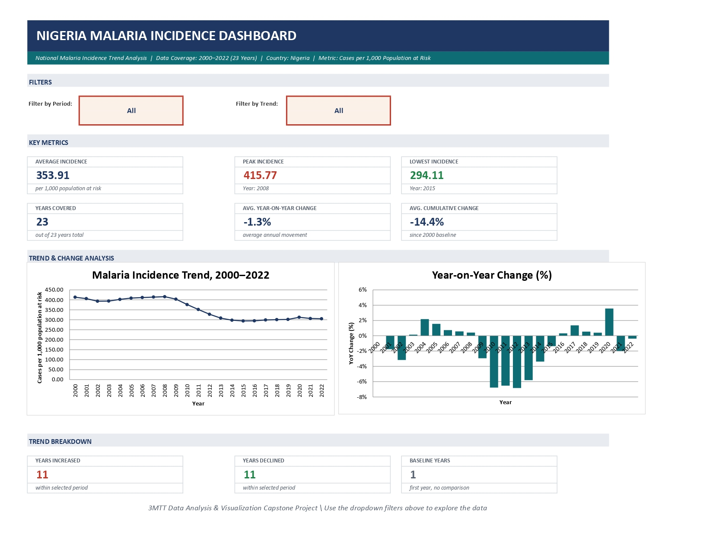

Nigeria Malaria Incidence Analysis (2000–2022)
Analysed Nigeria’s malaria incidence data from 2000 to 2022. Cleaned and prepared the dataset, explored trends over time, and built an interactive Excel dashboard with key figures, comparison charts, filters and an insights summary.
